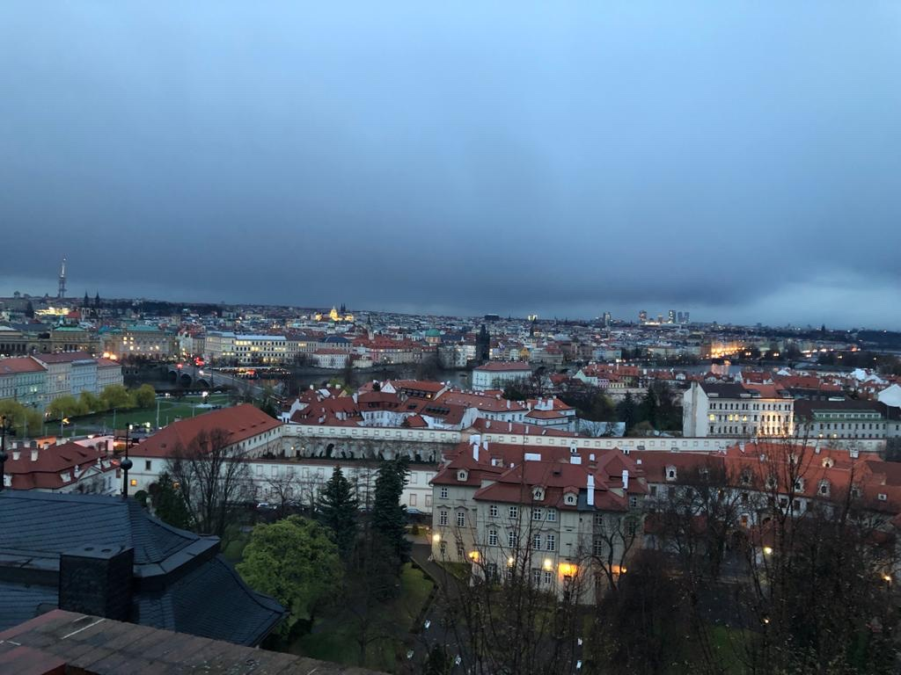
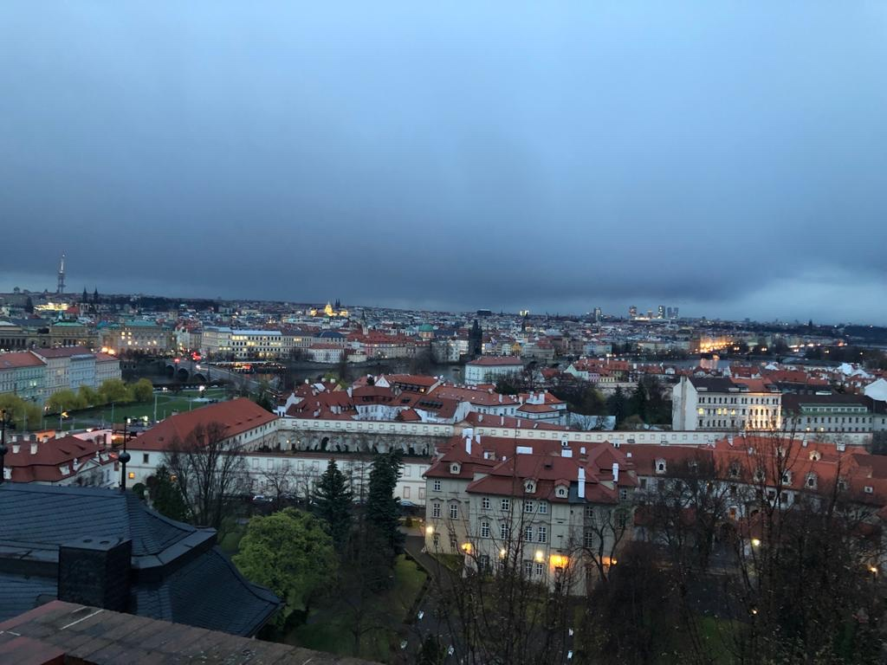
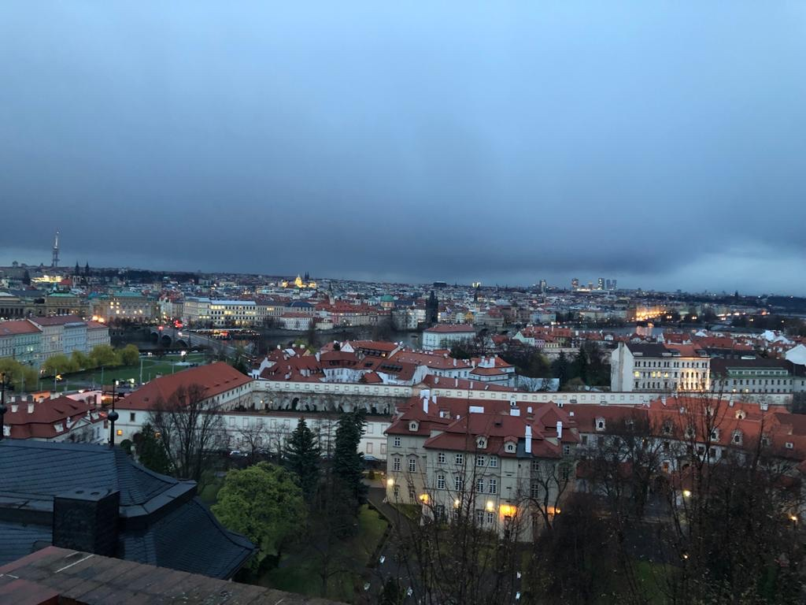
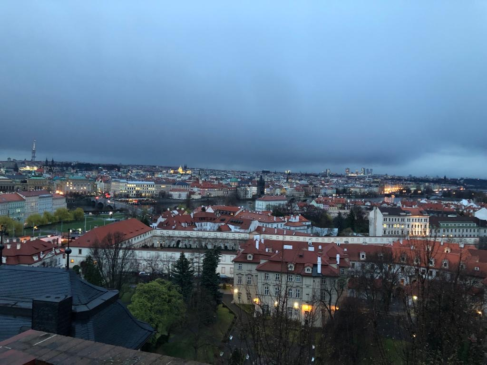

Greece, Bulgaria, Albania, Kosovo, Serbia, Hungary, Slovakia, Czech Republic,
Germany, Turkey, Norway, and Sweden are among the countries I've visited.
Knowing Turkish, English, Macedonian, Albanian, and a bit of Norwegian
made it much easier for me to travel to these countries.
I've always enjoyed visiting other cultures and learning new languages.
Italy, Austria, and Finland are the next places I'd like to see.